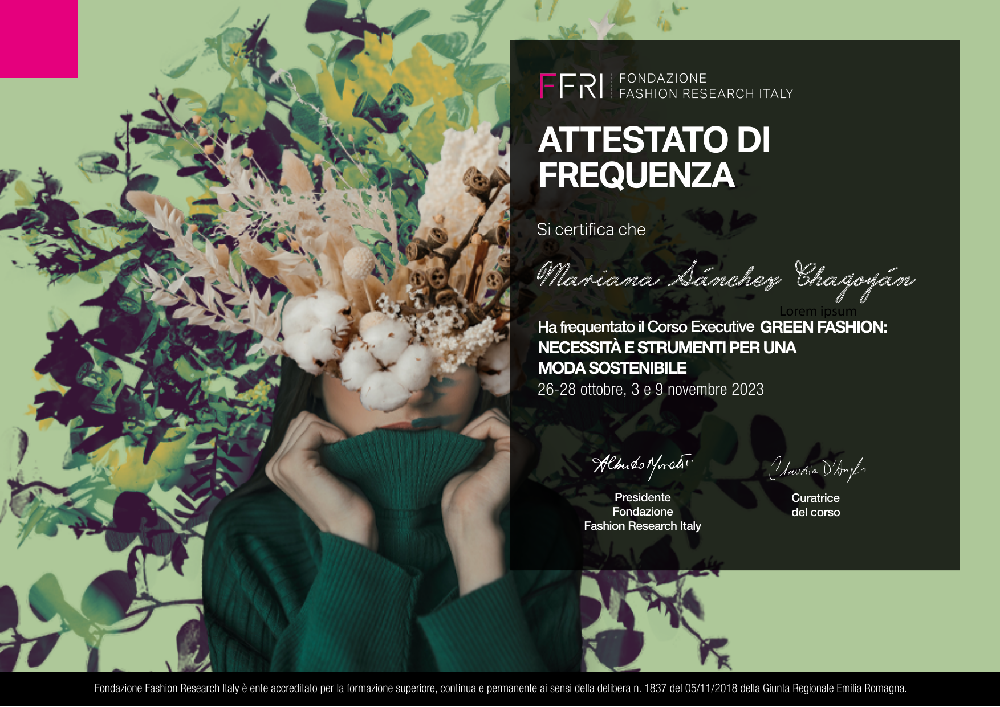

Academic and professional projects exploring sustainable fashion, ethical decision-making,
environmental communication and responsible business practices with impact.

01
Green Fashion: Necessità e strumenti per una moda sostenibile
Executive Course · Fondazione Fashion Research Italy · 2023
Executive course focused on the tools and perspectives needed to approach
sustainability in the fashion industry, mixing responsible production, materials
awareness and more conscious business practices.
Sustainable FashionMaterials AwarenessResponsible Production
Academic Laboratory · LUISS Business School · 2025/26 · 24 hours
A laboratory exploring how ethics and sustainability can shape business strategy,
leadership and value creation, reinforcing a responsible and impact-oriented approach
to management.
Visual and analytical project examining the environmental impact of the fashion
industry through the story "Esperar", linking water pollution, emissions, circular
fashion and climate change through ethics, creativity and cultural references.